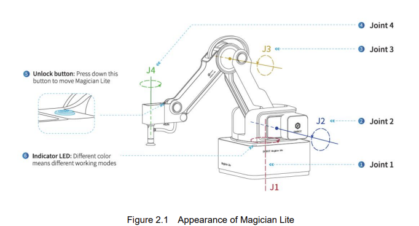
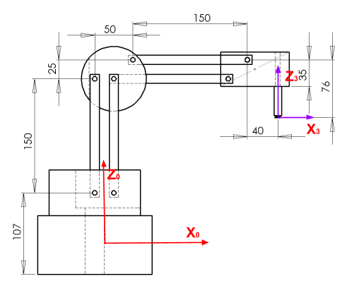
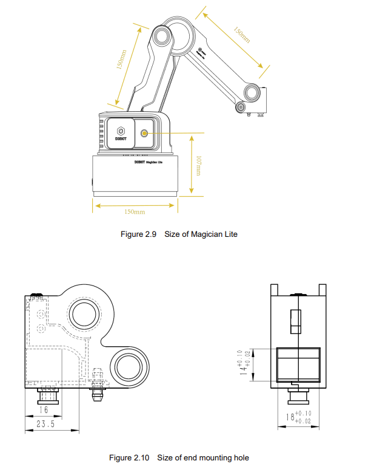
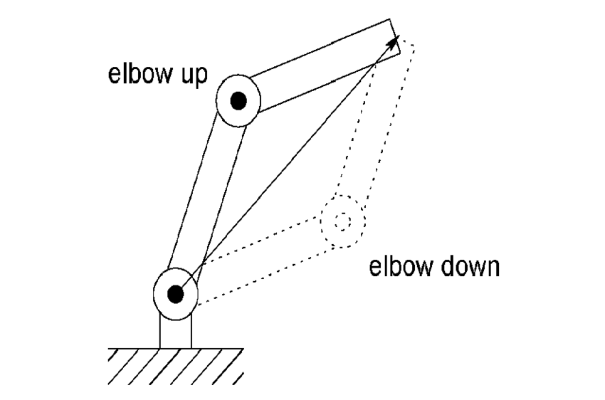
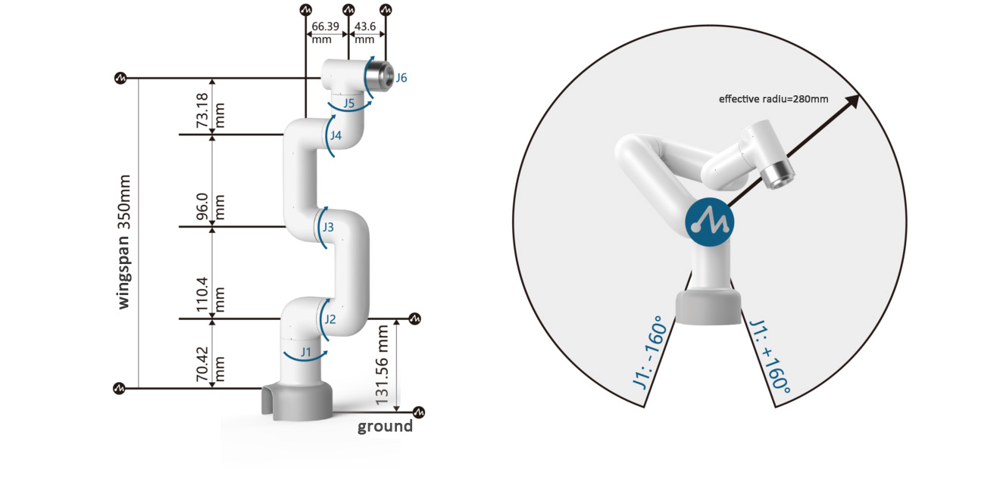
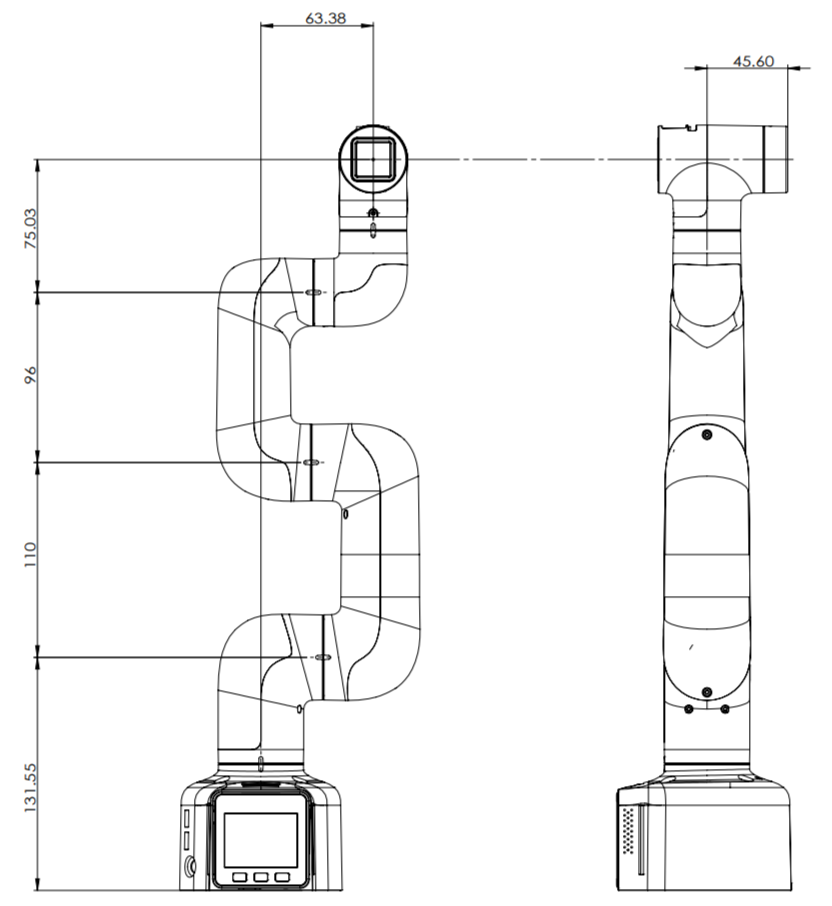
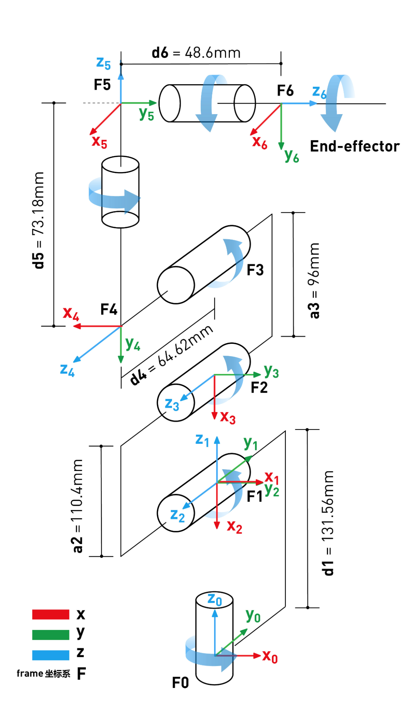
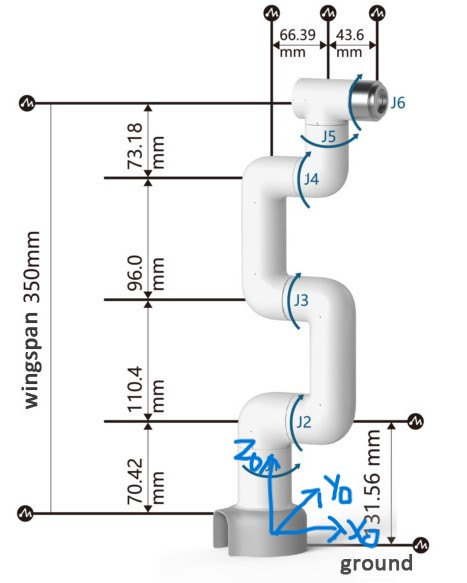
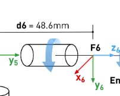

Articulated robots - Lab 4
Forward and Inverse Kinematics
Instructor: Prof. Sangram Redkar
Lab-incharge:
- Sai Srinivas Tatwik Meesala: smeesala@asu.edu
- Rajesh S Aouti: raouti@asu.edu
Duration: 2 hours
Robot: Dobot Magician Lite
Software: Python 3.10+, pydobot2, SymPy, MATLAB
Preparations before class
- Operating System: Ubuntu 22.04 (dual boot).
- Software: Python with pydobot, and pydobot2; and SymPy: get familiar with the packages.
- Read the entire document before coming to the lab.
- Calculate the forward and inverse kinematics by hand and in Python/Matlab write the necessary function
NOTE: Without showing the forward and inverse calculation before the lab, you will not be allowed to perform the lab.
Deliverables
- Lab Report – Document procedure in objective, detail, results, observations with images, and conclusions.
- Python Source Files (.py) – Submit all scripts used for the lab.
- Demonstration Photos(s) – Upload screenshots and photos evidence of successful execution; provide shareable links. Ensure photos are professional, and well-presented with visual cues and graphics.
- Lab Check-Off – Contact teaching staff immediately after successful compilation and execution for verification.
- You will only get 2 chances to get a live demo check-off
- No use of online tools and generative AI is permitted for the lab 4
**You may combine Lab 3 and 4 together in the report.**
Introduction
Key objectives:
- Gain practical experience with FK and IK.
- Implement motion sequences using Python and the pydobot library.
- Understand teaching, touching up points, and coordinate accuracy.
Software: pydobot and https://pypi.org/project/pydobot2/
Preparations
To find the COM port of the robot:
- Mac: ls /dev/tty.* | grep usb
- Linux: ls /dev/tty*
Using Python
After the above preparations are completed, the manipulation of the robotic arm can be implemented. First, open the installed PyCharm/VS Code/Jupyter NB, create a new Python file, and import the library by entering the following code. Go through the following link for all Python commands: https://pypi.org/project/pydobot2/
from pydobot.dobot import MODE_PTP
import pydobot
device = pydobot.Dobot(port="COMXX") # For Windows, replace COMXX with the actual port, e.g., COM3
# device = pydobot.Dobot(port="/dev/ttyUSB0") # For Linux
# device = pydobot.Dobot(port="/dev/tty.usbserial-XXXX")
device.home() # Home the robot to the origin position
(pose, joint) = device.get_pose() # Get the current position and joint angles
print(f"pose: {pose}, j: {joint}")
[x, y, z, r] = pose
[j1, j2, j3, j4] = joint
# position, joint = pose.position, pose.joints
print(pose)
device.speed(1000, 1000)
# Preferred way to move
device.move_to(mode=int(MODE_PTP.MOVJ_XYZ), x=230, y=30.0, z=20, r=0.0) # Move to position (x=250, y=0, z=50) with r=0
device.move_to(mode=int(MODE_PTP.MOVJ_ANGLE), x=250, y=0.0, z=50, r=0.0) # Move to joint angles (j1=0, j2=0, j3=0, j4=0)
# Control gripper and suction cup
device.grip(True) # Close the gripper
device.grip(False) # Open the gripper
device.suck(True) # Turn on the suction cup
device.suck(False) # Turn off the suction cup
device.close()
THESE ARE NOT REQUIRED
# Advanced way to move
device.move_to(mode=int(MODE_PTP.JUMP_XYZ), x=230, y=30.0, z=20, r=0.0) # Lift and move to position (x=250, y=0, z=50) with r=0
device.move_to(mode=int(MODE_PTP.JUMP_ANGLE), x=200, y=30.0, z=20, r=0.0) # Lift and move to joint angles (j1=0, j2=0, j3=0, j4=0)
# Move by relative amounts
device.move_to(mode=int(MODE_PTP.MOVJ_INC), x=-10, y=-10.0, z=-10, r=0.0) # Move relative to current angles by (dj1=-10, dj2=-10, dj3=-10, dj4=0)
device.move_to(mode=int(MODE_PTP.MOVJ_XYZ_INC), x=10, y=10.0, z=30, r=0.0) # Move relative to current position by (dx=10, dy=10, dz=10) with dr=0
Lab 3.1: Forward Kinematics
Objectives
- Define Forward Kinematics: Using methods taught in class and Denavit–Hartenberg parameters for the Dobot Magician Lite.
- Construct homogeneous transformation matrices using SymPy.
- Validate FK numerically by comparing symbolic results with robot feedback.
Perform a homogenous transformation for the robot by hand and in python using SymPy library. Measure the length of the robot joints and substitute them in the python to verify them.



Make sure that your drawn zeroth frame matches the coordinates of the robot.
Show your work (along with a kinematic diagram) in the lab manual.
Write a function in Python using SymPy library and substitute the measurements above.
Verify your calculations of forward kinematics
Theta(1 to 4) = [0,0,0,0]
Homogeneous matrix
1 | 0 | 0 | 240 |
0 | 1 | 0 | 0 |
0 | 0 | 1 | 150 |
0 | 0 | 0 | 1 |
Theta(1 to 4) = [90,20,30,0]
Homogeneous matrix
0 | 1 | 0 | 0 |
-1 | 0 | 0 | 272.5 |
0 | 0 | 1 | 68.54 |
0 | 0 | 0 | 1 |
Calculate forward kinematics for following theta values:
- Theta(1 to 4) = [-2, 25, 23, 45]
- Theta(1 to 4) = [31,52,42,0]
- Theta(1 to 4) = [27,52,24,0]
Enter the following joint angles and calculate the homogeneous matrix of the robot end-effect (e.e). Call grader for check-off
- Now program the robot with the joint angles and check if your results are right. And screenshot of your terminal screens and the robot.
- How does the choice of base frame orientation affect the sign of Z in FK results?
- When multiplying homogeneous transforms, why is matrix multiplication order critical?
- You may observe that the robot can be jogged manually to certain positions, yet these positions cannot be reached through programmed commands. Identify four such positions on the Dobot Magician Lite and explain the underlying reasons. Discuss kinematic singularities, joint limit constraints, workspace boundaries, and safety restrictions as potential causes.
Lab 3.2: Inverse Kinematics
Calculate Inverse Kinematics by hand and python.
Write a function in Python using SymPy library to perform inverse kinematics and substitute the measurements and inputting the rotational matrices:
You need to calculate inverse kinematics for both elbow-up and elbow down orientation and output the optimal orientation that Dobot can reach.

Verify your calculations of Inverse kinematics
Homogeneous matrix
1 | 0 | 0 | 240 |
0 | 1 | 0 | 0 |
0 | 0 | 1 | 150 |
0 | 0 | 0 | 1 |
Theta(1 to 4) = [0,0,0,0]
Homogeneous matrix
0 | 1 | 0 | 0 |
-1 | 0 | 0 | 272.5 |
0 | 0 | 1 | 68.54 |
0 | 0 | 0 | 1 |
Theta(1 to 4) = [90,20,30,0]
Calculate joint angles for following homogeneous matrix values:
1 | 0 | 0 | 300 |
0 | 1 | 0 | 50 |
0 | 0 | 1 | 100 |
0 | 0 | 0 | 1 |
0.573 | -0.820 | 0 | 280 |
0.820 | 0.573 | 0 | -195 |
0 | 0 | 1 | 15 |
0 | 0 | 0 | 1 |
0.5 | 0 | 35 | |
0.5 | 0 | 270 | |
0 | 0 | 1 | -33 |
0 | 0 | 0 | 1 |
Enter the following homogeneous matrix and calculate the joint angles of the robot end-effect (e.e). Call grader for check-off
Now compare your results with the robot.
- Now program the robot with the homogeneous matrix and check if your results are right. And screenshot of your terminal screens and the robot.
- What happens to the IK solution when the target lies exactly on the workspace boundary?
- In what cases would IK yield no real solution, and how should this be reported in your program?
Discussion
Which orientation is possible by Dobot? Elbow up and elbow down, how do you know?
In industry, which kind of orientation is preferred? And why?
Calculate the Forward and Inverse Kinematics of the following robot


Make sure that your drawn zeroth and endeffector frame matches the robot’s coordinates.


End Effector:
